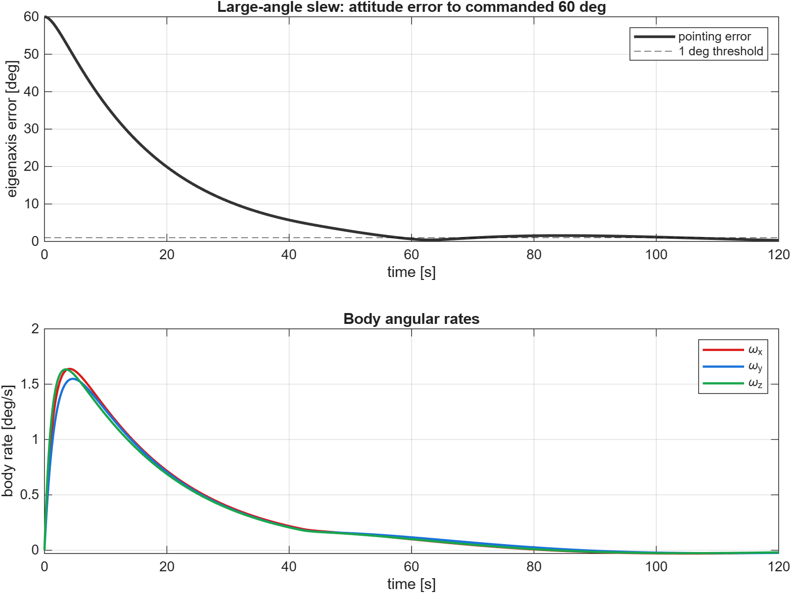
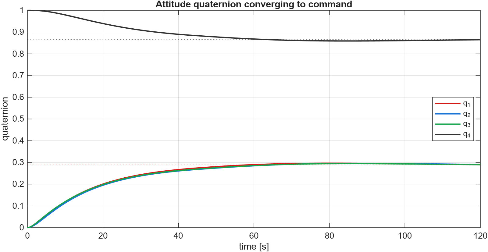
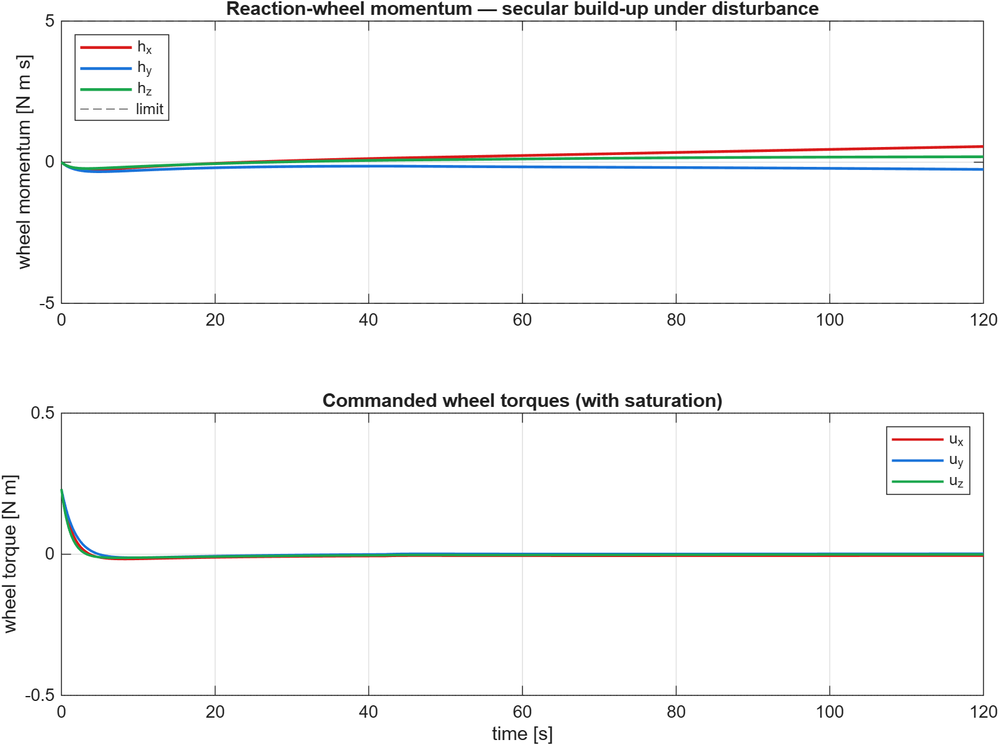

May-Jun 2026
Reaction-Wheel Satellite ADCS
Quaternion-feedback slew with momentum management
A rigid spacecraft performs a 60° eigenaxis slew under a quaternion PID law with three reaction wheels, conditional-integration anti-windup, and torque/momentum limits. A constant disturbance drives a secular wheel-momentum build-up.
Highlights
- 60° slew settling under 1° in ~58 s; final pointing error 0.30°
- Quaternion kinematics + nonlinear rigid-body dynamics with wheel coupling
- Conditional integration prevents slew windup
- Wheel-momentum build-up under disturbance motivates desaturation
Results & figures


